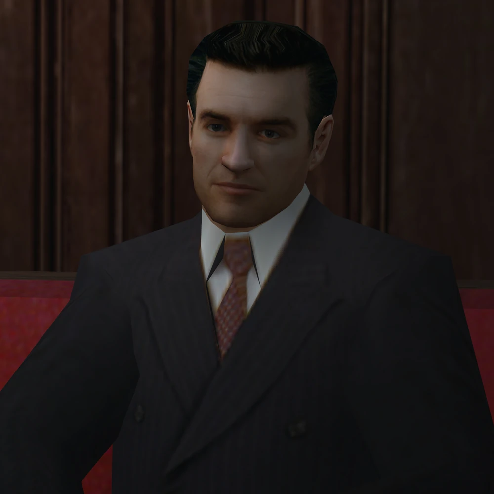
Bir taksi şoförü iken mafyaya katılmıştır. Prensip sahibi gerektiğinde sert ama vicdanlıdır. Oyun boyunca oyuncunun kontrol ettiği karakterdir.
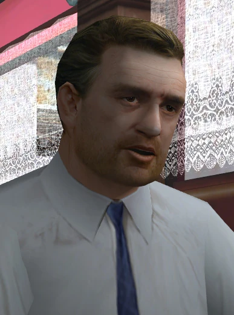
Dedektif ve polis memurudur. Dürüst ve adil bir polis olarak şehri temizlemeye kararlıdır. Tommy'nin itiraflarını dinleyen ve Salieri Ailesi'ni çökertmek için onunla iş birliği yapan dedektiftir.
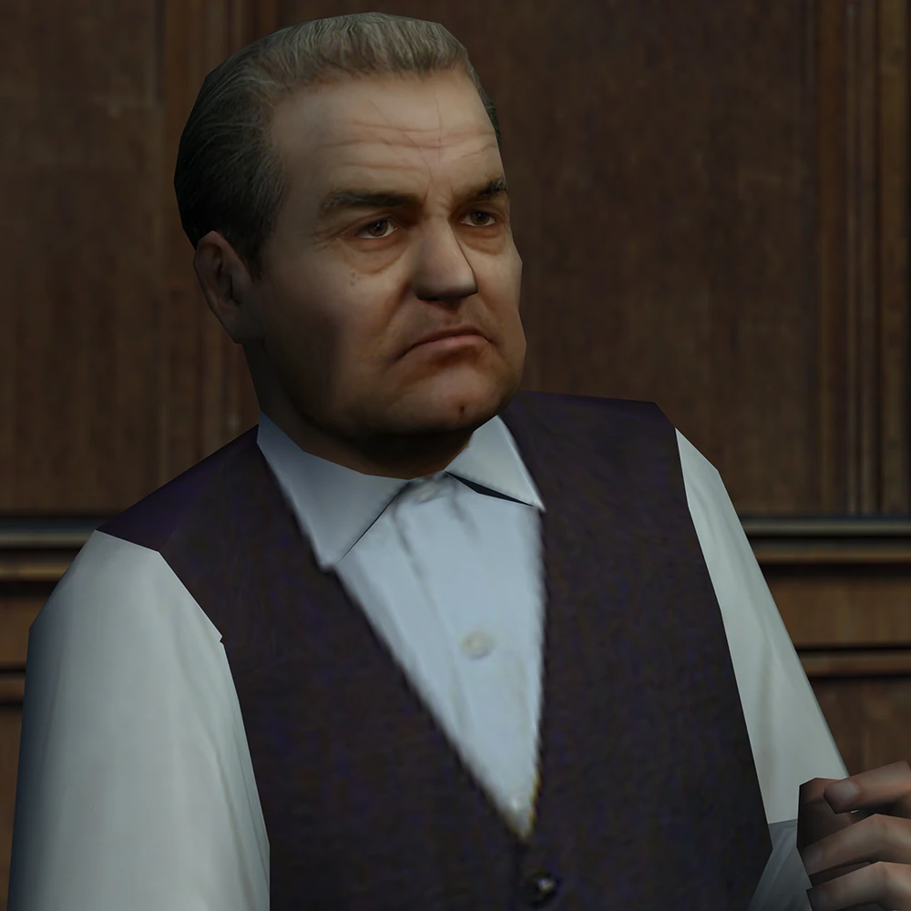
Salieri Ailesi'nin lideridir. Soğukkanlı, stratejik ve ailesine sadıktır. Şehirdeki suç dünyasının güçlü bir figürüdür. Oyunun ana hikayesinde, oyuncunun çalıştığı mafya ailesi patronudur.
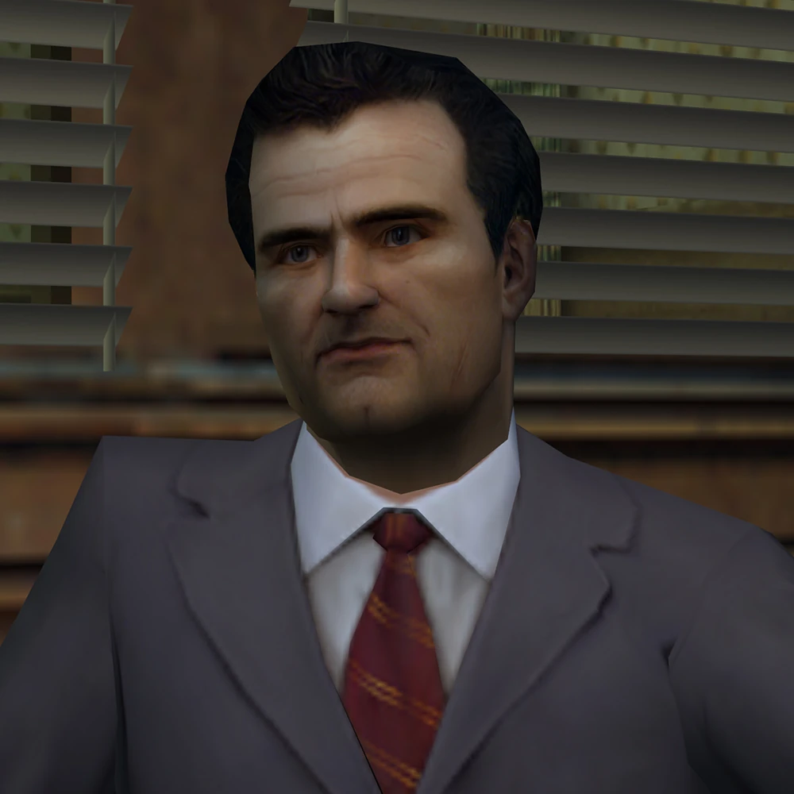
Tommy'nin en yakın dostu ve ailenin tetikçisidir. Esprili, cesur ama düşüncesizdir. Oyunun başından itibaren Tommy ile yakın çalışır ve görevlerde ön plandadır.
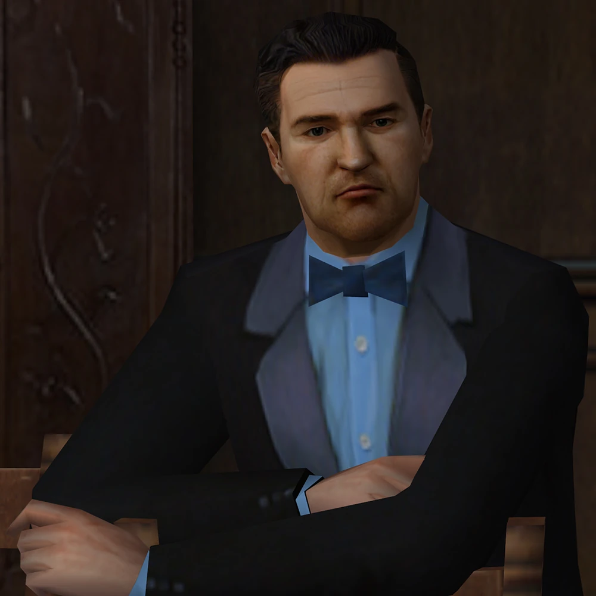
Sakin ve kurnaz, gerektiğinde acımasız olabilir. Salieri Ailesi'nde önemli bir tetikçidir. Oyuncunun birçok görevde yanında yer alır, ancak hikayenin ilerleyen bölümlerinde farklı bir yöne evrilir.
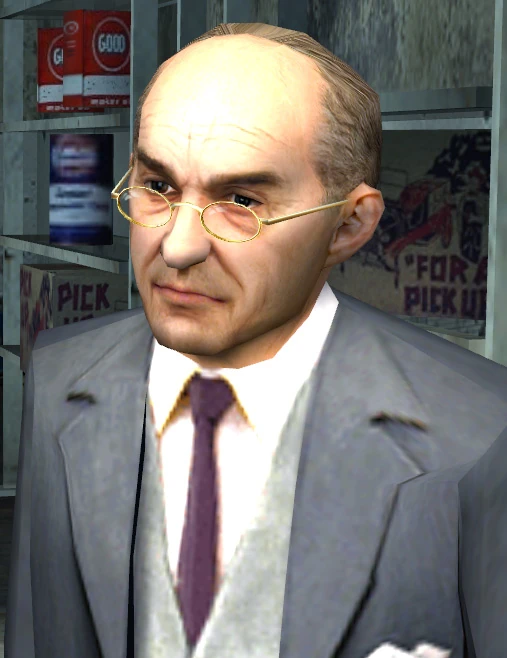
Don Salieri'nin sağ kolu ve muhasebecisidir. Sadık ama aile ve kişisel çıkarları arasında kalır. Finansal işleri yönetir ve Salieri'nin en güvendiği kişilerdendir.
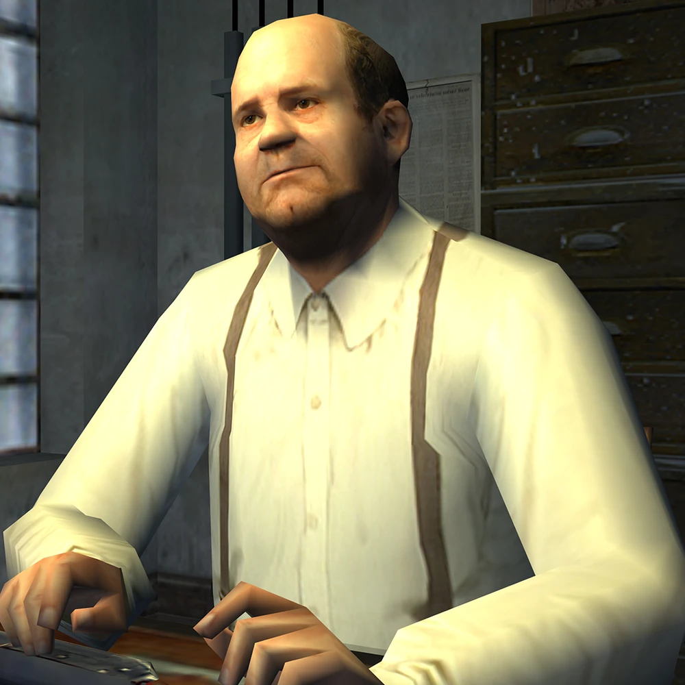
Salieri Ailesi'nin silah tedarikçisi. Güvenilir, işinde uzman ve sert biridir. Tommy ve diğer aile üyelerine görevlerden önce silah ve ekipman sağlar.
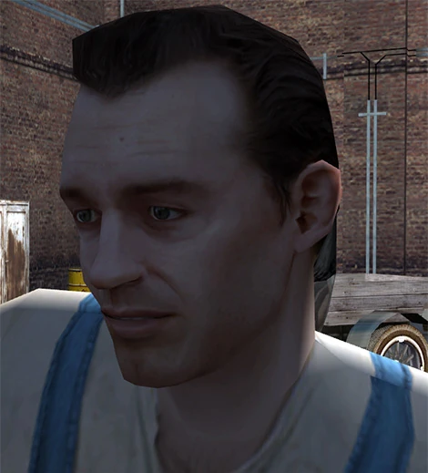
Salieri Ailesi'nin garaj sorumlusu ve araba tamircisi. Kekeme ve çekingen biri, ama araçlar konusunda yetenekli. Tommy'ye yeni arabalar sağlar. Oyun boyunca birçok yeni araç Ralphie sayesinde kullanılabilir hale gelir.
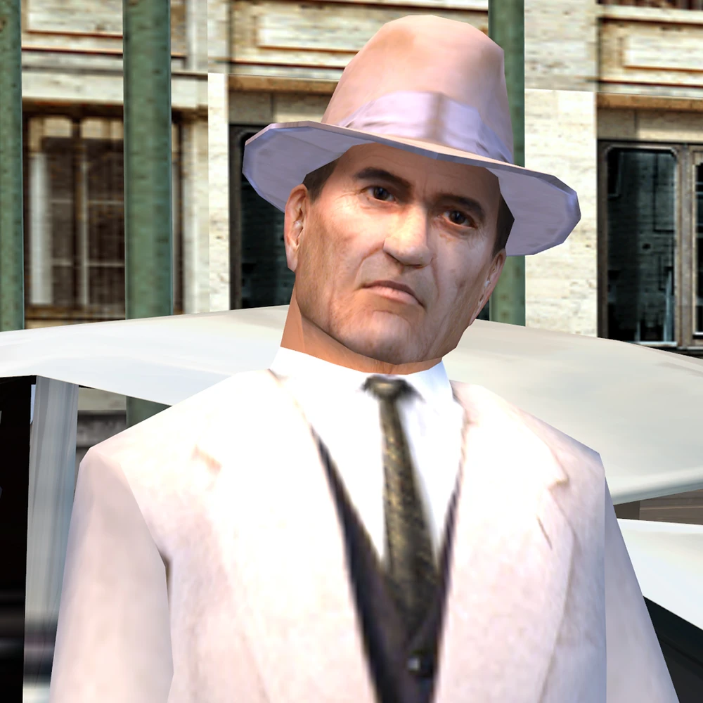
Salieri Ailesi'nin en büyük rakibi ve düşman mafyası lideridir. Acımasız, agresif ve acımasızca güç kullanır. Oyunun ana düşmanı ve Salieri Ailesi ile sürekli çatışma halindedir. Hikaye boyunca Morello'nun gücünü kırmak hedeflerden biridir.
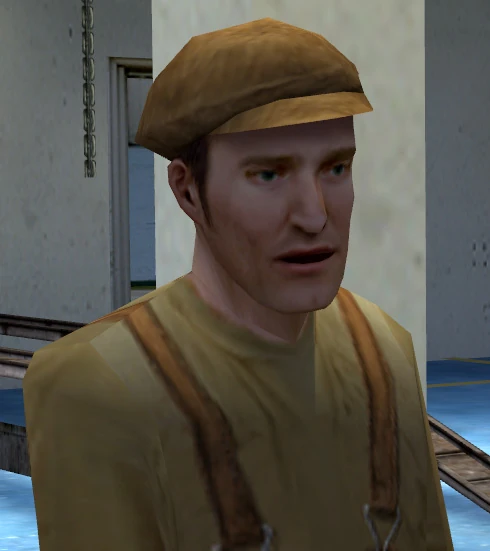
Tommy'nin dostu ve oto tamircisi. Arabalara düşkün, hızlı araçları ve çalıntı araçları tanır. Tommy'ye özel arabalar bulması için yardımcı olur. Ekstra görevler vererek daha hızlı ve güçlü araçların kilidini açar.
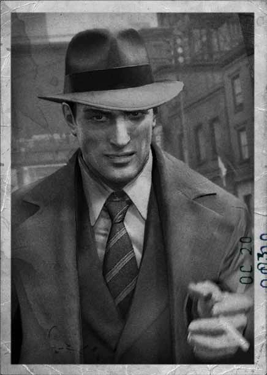
Oyunun ana karakteridir. Sicilya doğumlu, savaş gazisi ve hayatta kalmak için suç dünyasına adım atan genç bir adamdır. Mafyada yükselerek kendine yer edinmeye çalışır.
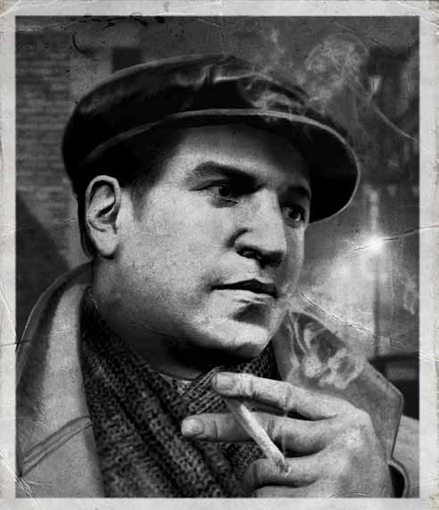
Vito’nun çocukluk arkadaşı ve en yakın dostudur. Dışa dönük, patavatsız ama sadık bir karakterdir. Mafya dünyasında hızlıca yükselmek ister ve Vito ile birçok maceraya atılır.
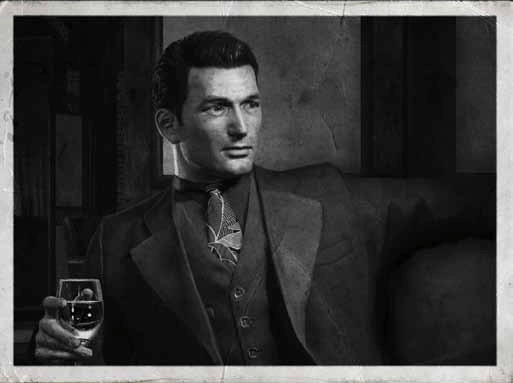
Clemente ailesinin bir üyesi olan Henry, daha sonra Falcone ailesine katılır. Zeki ve dengeli bir yapıya sahiptir. Suç dünyasında pragmatik bir şekilde hayatta kalmaya çalışır.
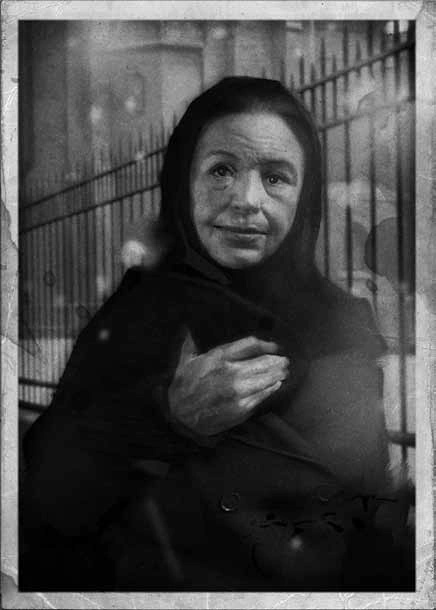
Vito Scaletta’nın annesidir. Sicilya’dan Empire Bay’e göç etmiştir. Ailesine bağlı ve fedakâr bir kadındır. Vito’nun suç dünyasına girmesini istemez.
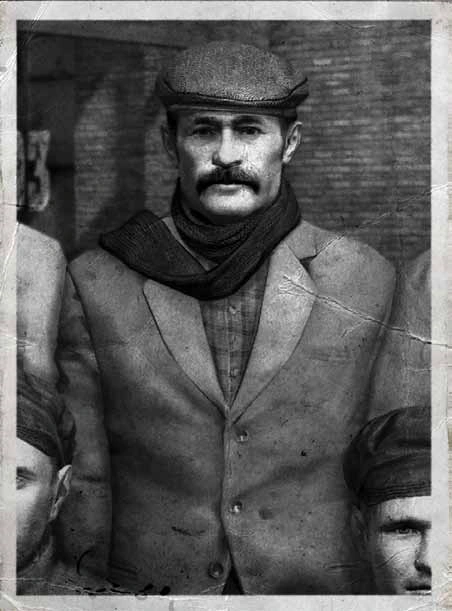
Vito’nun babasıdır. Empire Bay’de liman işçisi olarak çalışmıştır. Zorlu bir hayatı olmuştur ve ağır çalışma koşulları nedeniyle hayatını kaybeder. Vito’nun hayata bakışını şekillendiren önemli bir figürdür.
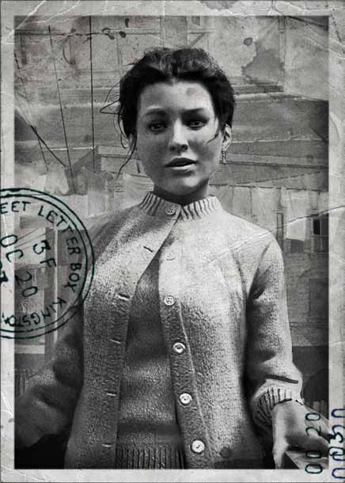
Vito’nun kız kardeşidir. Aileyi bir arada tutmaya çalışır. Dürüst ve ahlaklı bir yapısı vardır. Vito’nun suç dünyasına girmesinden endişe duyar.
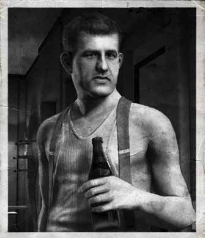
Francesca'nın erkek arkadaşıdır. Agresif ve kaba bir karakterdir. Vito, kız kardeşine kötü davranan Eric’i defalarca uyarmak zorunda kalır.
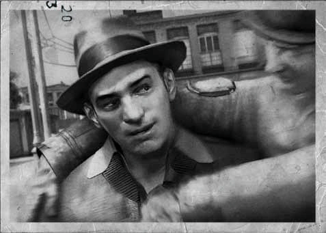
Joe Barbaro’nun genç ve hevesli arkadaşıdır. Mafya dünyasına katılmak isteyen Marty, deneyimsizliği nedeniyle trajik bir sonla karşılaşır.
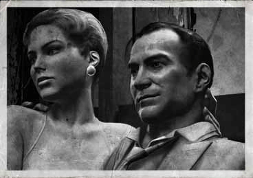
Falcone ailesinde önemli bir rolü olan Eddie, genellikle ara bulucu ve organizatör olarak görev yapar. Eğlenceli ama acımasız bir yapısı vardır.
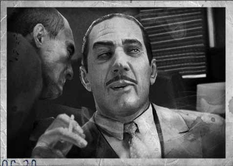
Clemente ailesinde yüksek bir pozisyona sahiptir. Acımasız ve sadık bir tetikçidir. Clemente’nin en güvenilir adamlarından biridir.
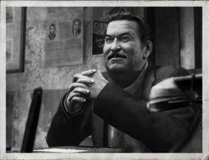
Vito’nun babasının eski patronudur. Empire Bay limanında çalışır ve Falcone ailesiyle bağlantılıdır. Kibirli ve zalim bir yapısı vardır.
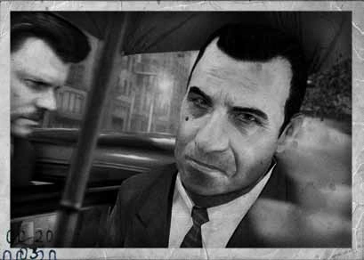
Falcone ailesinin lideridir. Empire Bay’in suç dünyasında güçlü bir figürdür. Sert ve acımasızdır, gücünü korumak için her türlü yöntemi kullanmaktan çekinmez.
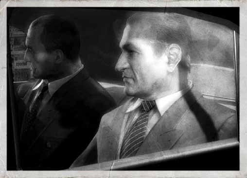
Clemente ailesinin lideridir. Hırslı ve gaddar bir mafya babasıdır. Diğer mafya aileleriyle sürekli çatışma halindedir ve Falcone ailesiyle rekabet içindedir.
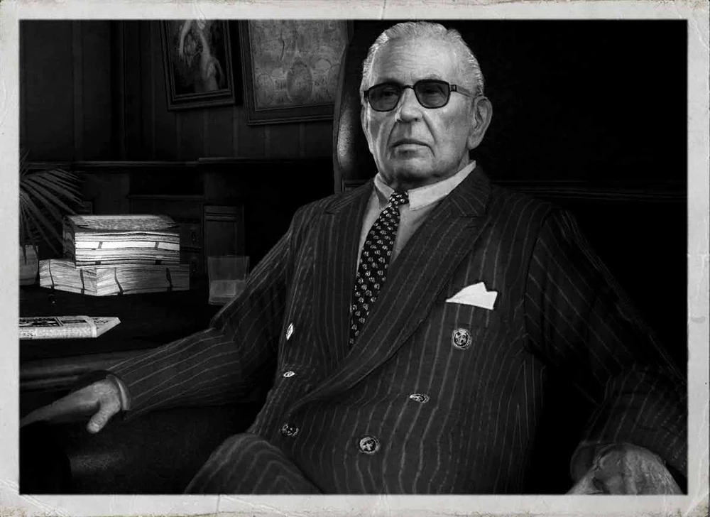
Vinci ailesinin lideridir. Eski nesil mafya babalarından biridir. Onurlu ve kurallara bağlı bir liderdir. Falcone ve Clemente aileleriyle rekabet halindedir.
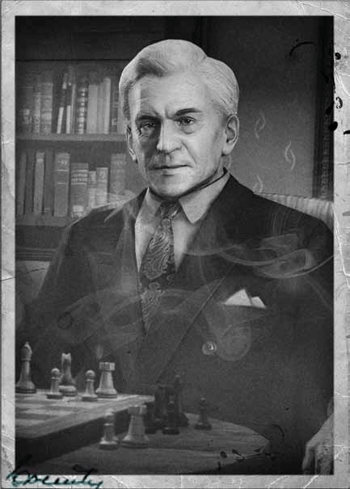
Falcone ailesinin önemli bir lideridir. Empati kurabilen, akıllı ve deneyimli bir mafya babasıdır. Hapishanede Vito’ya yol gösterir ve onun yükselişinde önemli bir rol oynar.
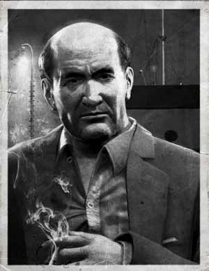
Hapishanede Leo Galante için çalışan bir boksördür. Hapiste Vito’ya dövüşmeyi öğretir ve korur.
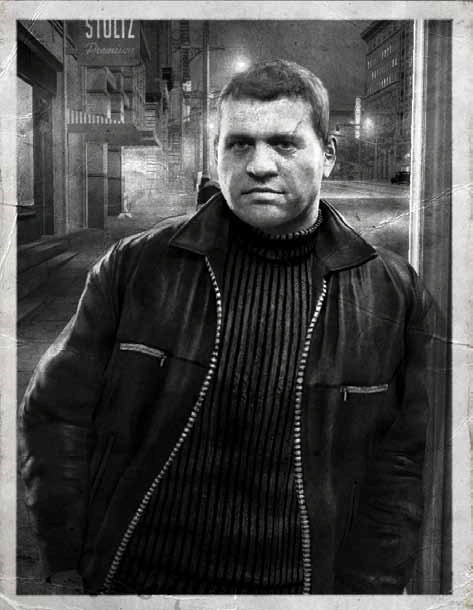
İrlandalı bir çete lideridir. Vito ve Joe ile sık sık çatışır. İrlandalı çetesi, İtalyan mafyasına rakip olarak faaliyet göstermektedir.
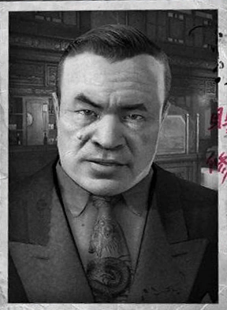
Çinli Triad örgütünün bir üyesidir. Empire Bay’de Çin Mahallesi'nde faaliyet gösterir. Suç dünyasında önemli bir yere sahiptir.
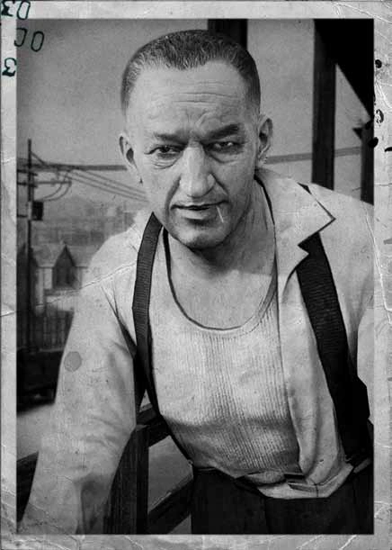
Clemente ailesinde çalışan bir tetikçidir. Clemente’nin koruması olarak görev yapar.
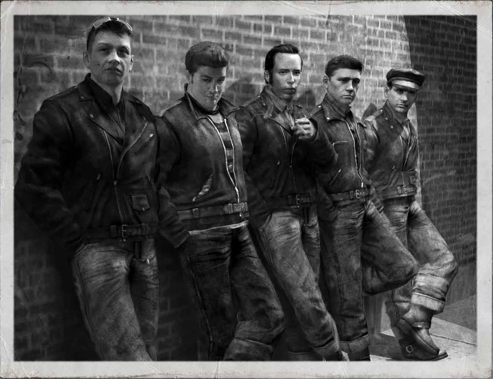
Vito ve Joe’nun rakiplerinden biri olan genç bir çete lideridir. Genellikle motorcu çeteleriyle ilişkilidir.
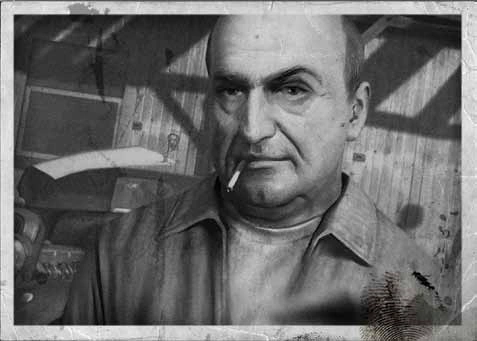
Araba hurdalığı işleten bir suçludur. Çalıntı araçların parçalanmasında ve satılmasında rol oynar. Vito ve Joe’ya çeşitli görevler verir.
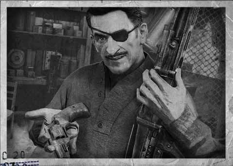
Vito’ya silah satan bir karaborsa tüccarıdır. Orduyla bağlantıları vardır ve nadir silahlar sağlar.
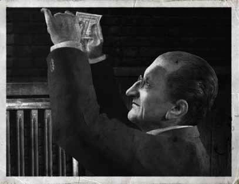
Empire Bay’de yasa dışı para satan bir tefecidir. Yüksek faizle borç verir ve ödemelerini zamanında almazsa acımasızdır.
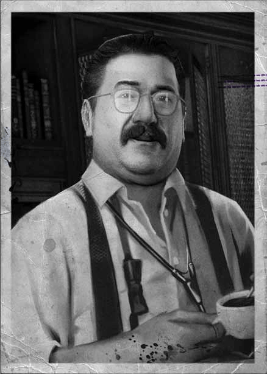
Mafya doktorudur. Yaralanan mafya üyelerini gizlice tedavi eder. Falcone ailesine hizmet eder.
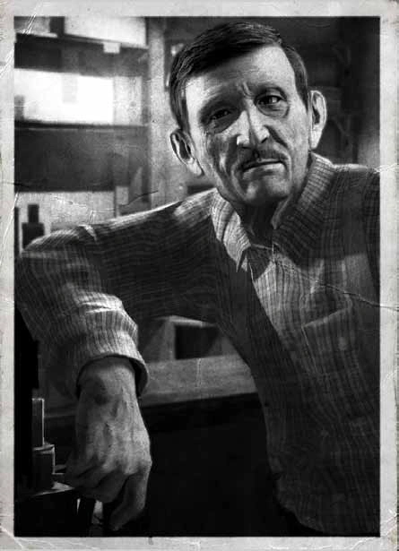
Anahtar kopyalama ve hırsızlık ekipmanları konusunda uzmandır. Vito ve Joe’nun araç hırsızlıklarında yardımcı olur.
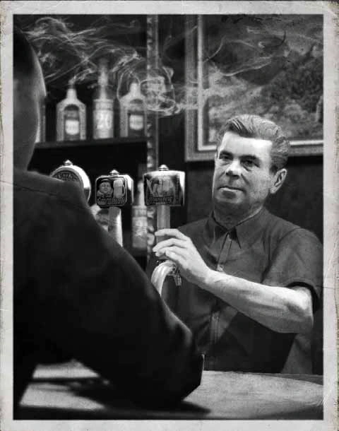
Falcone ailesine bağlı bir barmen ve Falcone’nun kulübünün işletmecisidir. Mafya ile ilgili bilgilere sahiptir.
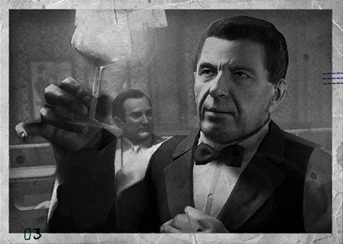
Hapishanede Leo Galante için çalışan bir başka mahkûmdur. Vito'ya dostça yaklaşır ve koruma sağlar.
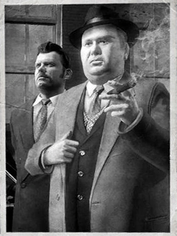
Clemente ailesi için çalışan bir tetikçidir. Clemente’nin işlerini yürütür ve gerektiğinde şiddete başvuru